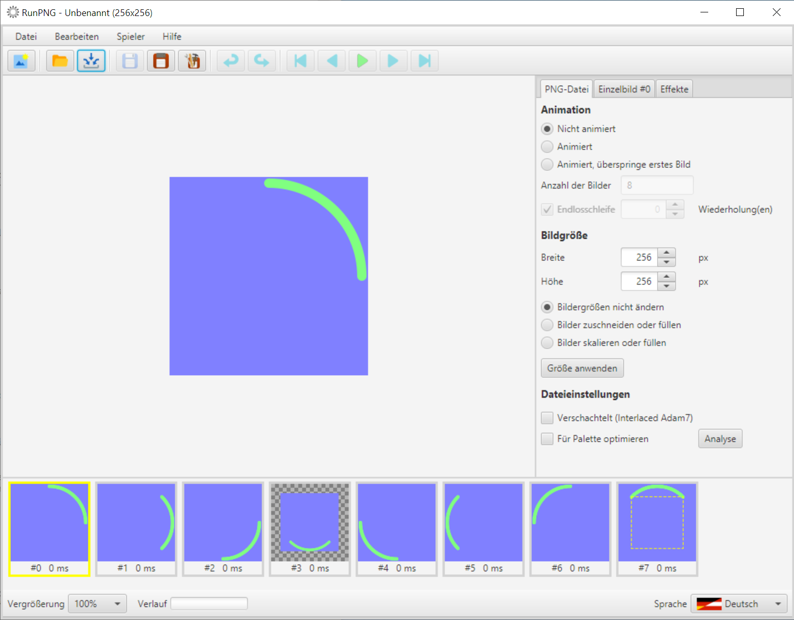
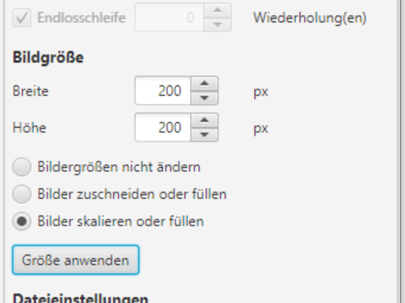
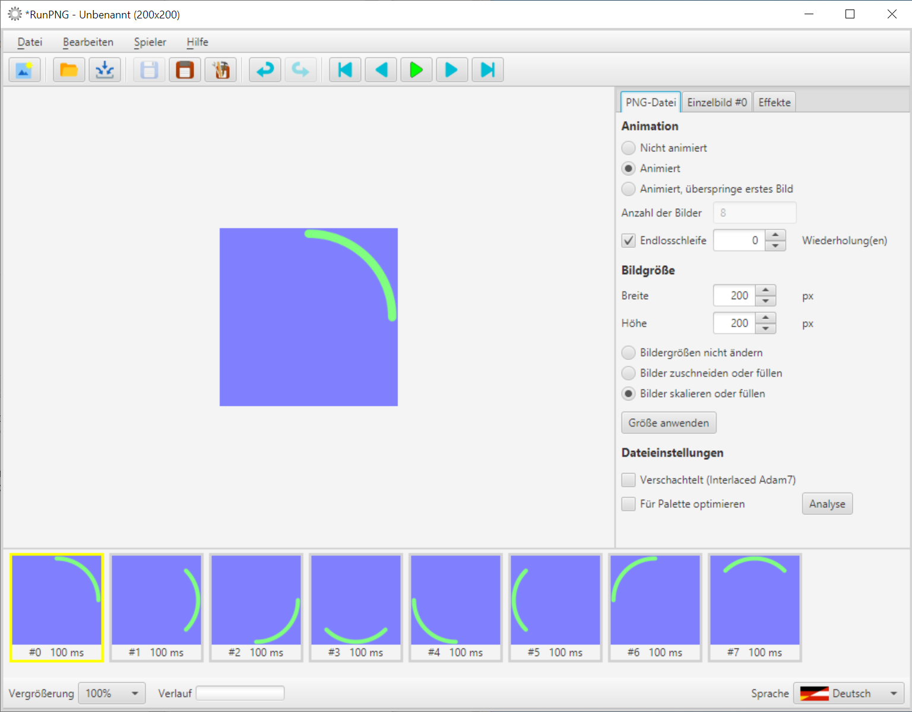

Bildgrößen
Abweichende Größen
Die Größe einer APNG-Bildsequenz ist für alle Einzelbilder gleich. Breite und Höhe werden wie in einer einfachen PNG-Datei im Kopfdatensatz abgelegt. Auch wenn es innerhalb einer APNG-Datei anders aussehen mag. Doch damit kommt der Anwender für gewöhnlich nicht in Berührung.
Bildsequenz mit abweichenden Größen
Im Ordner RunPNG/doc/samples/sectors 1/ befindet sich eine Bilderserie (Frame #0.png - Frame #7.png) die wir einlesen wollen. Sechs dieser Bilder besitzen die Maße 256 x 256 Pixel. Zwei weichen davon ab.
Auf den ersten Blick sieht man, dass die Bilder nicht identisch groß sind. Verharrt man mit dem Mauszeiger z. B. über Bild #3, dann steht dort die Größe 192 x 192 zu lesen. Es ist für den Anwendungszweck zu klein. Umgekehrt verhält es sich mit Bild #7. Das ist mit 384 x 384 Pixeln zu groß. RunPNG zeigt in dem Fall mit dem gelben gestrichelten Rahmen die relative Bildgröße an, mit der die Applikation gegenwärtig arbeitet.
Wir könnten mit dem Material, so wie es ist, natürlich eine animierte Sequenz abspeichern. Allerdings muss sich RunPNG an die gemeinsame Größe halten. Bild #3 bekäme außen herum eine transparente Füllung und bei Bild #7 würde alles Überstehende abgeschnitten. Implizit so, als hätte der Anwender Bilder zuschneiden oder füllen ausgeführt. Was im rumpelnden Ergebnis aber vielleicht nicht gewünscht wäre.
Gemeinsame Größen

Doch sind die gegebenen Größen ohnehin alle nicht passend. Denn wir wollen ein kleines bewegtes Aktivitäts- bzw. Wartesymbol mit den Maßen 200 x 200 Pixel speichern. Dazu geben wir die neue Breite und Höhe unter dem Tabulator PNG-Datei ein, wählen Bilder skalieren oder füllen aus und klicken auf Größe anwenden. Schon haben alle Einzelbilder die gleiche Größe.
Nun müssen wir nur noch der Applikation unter dem Tabulator PNG-Datei mitteilen, dass wir eine Animation haben wollen. Und unter dem Tabulator Einzelbild stellen wir 100 ms ein. Verzögerung für alle Bilder nicht vergessen zu drücken.
Hinweis: Mit dem ...oder füllen hat es die Bewandtnis, dass bei einer Serie von Bildern bisweilen nicht alle das gleiche Seitenverhältnis haben. Oder unter dem Tabulator PNG-Datei ein abweichendes Seitenverhältnis eingegeben wurde. RunPNG skaliert und schneidet symmetrisch und zentriert. Was bei unpassendem Seitenverhältnis zur Folge haben kann, dass außen herum Lücken entstehen. Die werden dann mit Transparenz gefüllt.